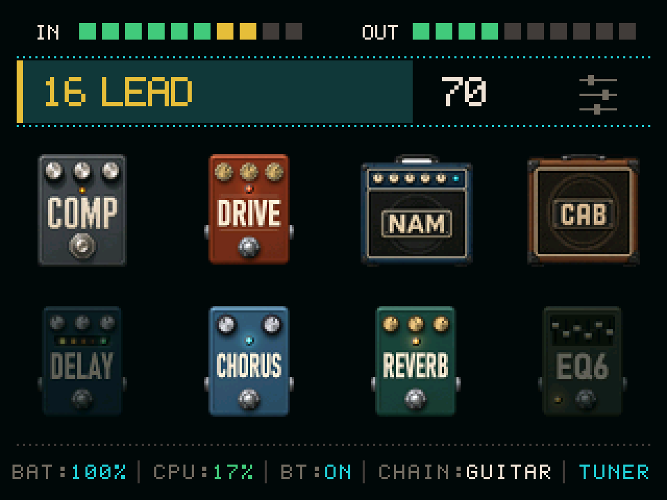
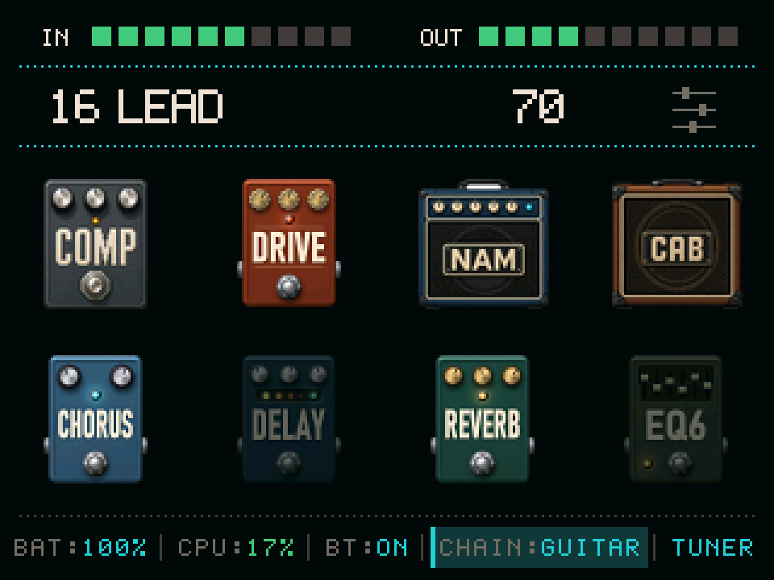

Scope Aperture boot
A short boot animation that hands straight over to the interface: no placeholder screen while the engine loads.
CUSTOM FIRMWARE · WORK IN PROGRESS
Lumen replaces the pedal's on-screen interface with a faster, clearer one: a pedal-board home screen, a block editor, chain reordering, settings and a tuner, behind a new boot animation. Your sound engine, MIDI controls and ToneCommand stay fully compatible.


SEE IT RUN
Rendered from the real Lumen UI code on a PC, with demo preset and parameter data. Not footage of a pedal.
WHAT'S NEW
A short boot animation that hands straight over to the interface: no placeholder screen while the engine loads.
Eight blocks with their own icons, level meters, preset name, volume, battery and live CPU load at a glance.

Push a pedal to edit it. Block, type and ON/OFF up top, three big parameter tiles per page below.

Turn the selector and presets load as you go, looping from 64 back to 1. Icons follow each preset's blocks.

Choose CHAIN, grab a block, turn to move it, push to drop it. Swap a delay and a chorus in seconds.

Synth mode, USB loopback, input gain, USB and Bluetooth volume, MIDI channel, plus a built-in tuner.
INSTALL FROM BROWSER
Connect your NanoCore over USB. The installer backs up your stock 1.2 firmware locally, patches it in your browser, flashes only the changed sectors, and verifies every byte.
Ready when you are.
Use desktop Chrome or Edge, connect USB, and keep your pedal powered throughout the upload.
Your firmware and backup never leave your browser. Requires stock firmware 1.2.
No activity yet.